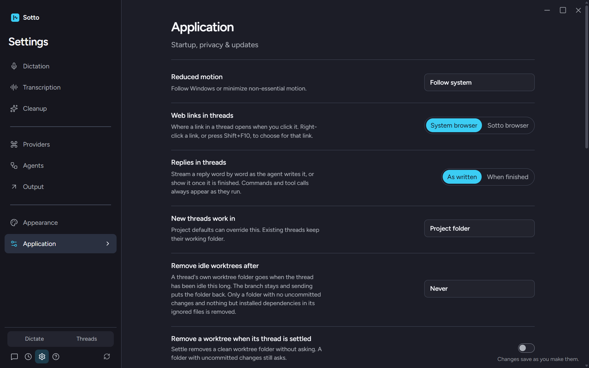
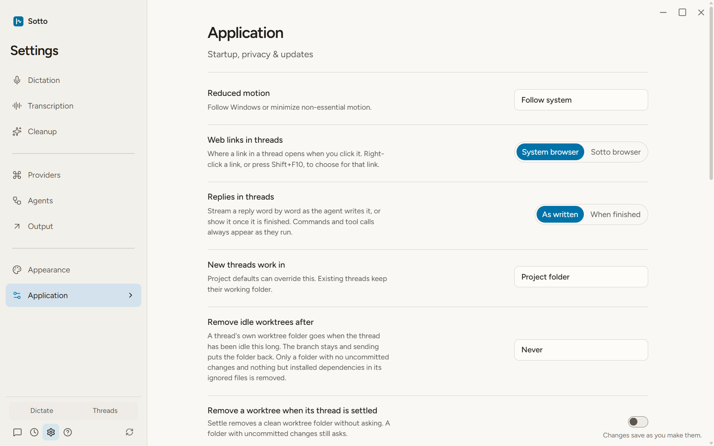
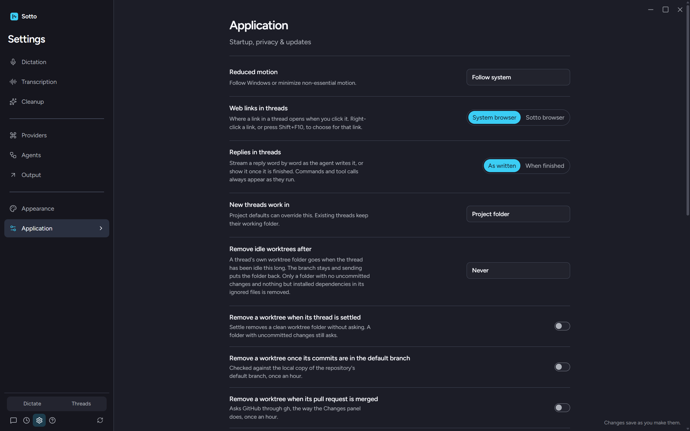
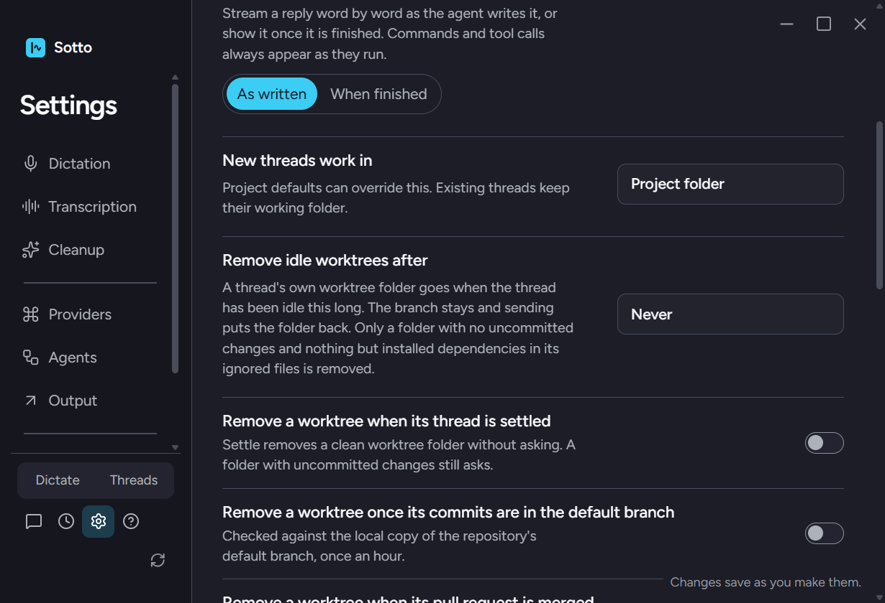
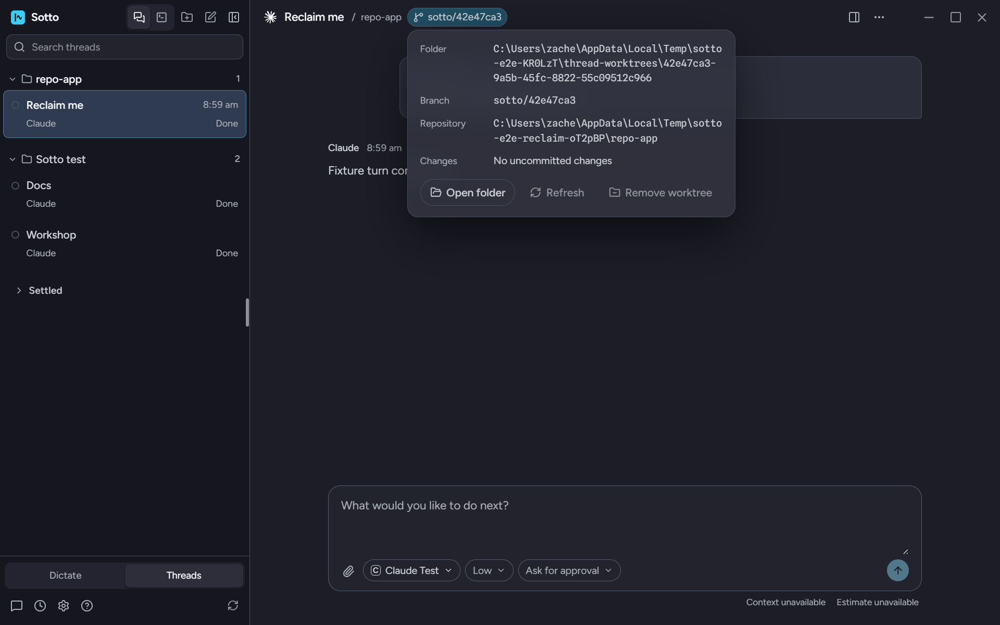
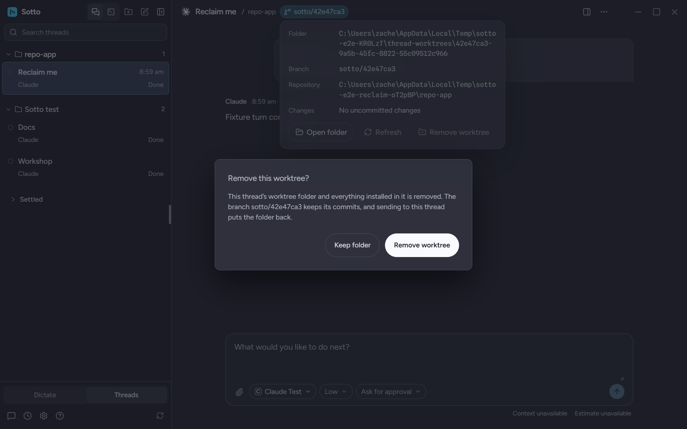
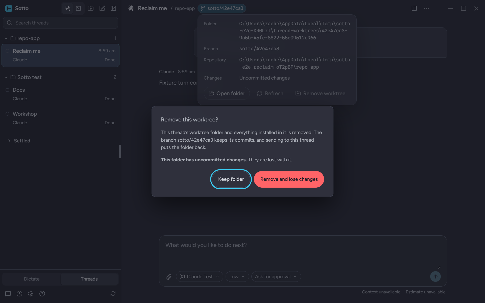
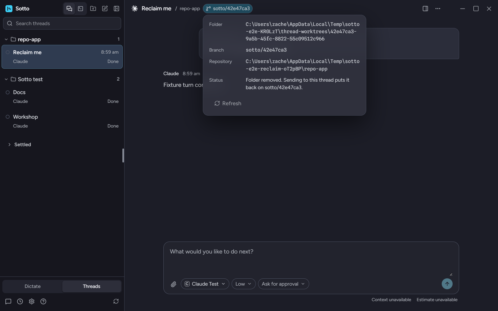
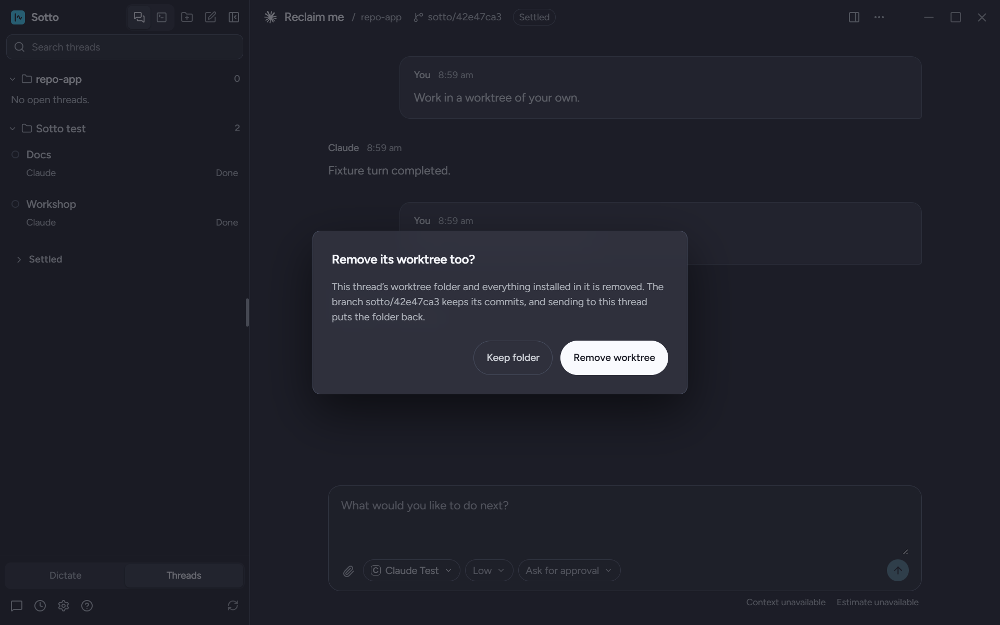

Captured from the built app by tests/e2e/thread-worktrees.spec.ts on branch feat/reclaim-worktrees. Every screenshot is the real window, a real Git repository and a real worktree Sotto made and then removed.
Under "New threads work in". One select for the idle rule and three toggles. Nothing is on by default.




Only for a worktree Sotto made for this thread alone. A shared or reused folder never shows it.

Clean: names the folder and the branch that stays. Dirty: says the uncommitted changes are lost and the confirm turns red. Escape or Keep folder leaves everything as it was.


The record stays. The panel says the folder is gone and that sending puts it back; Open folder is withheld until it is.

Settle settles first, as before. Then, for a thread with its own worktree, one question. Keep folder or Escape leaves the folder.
